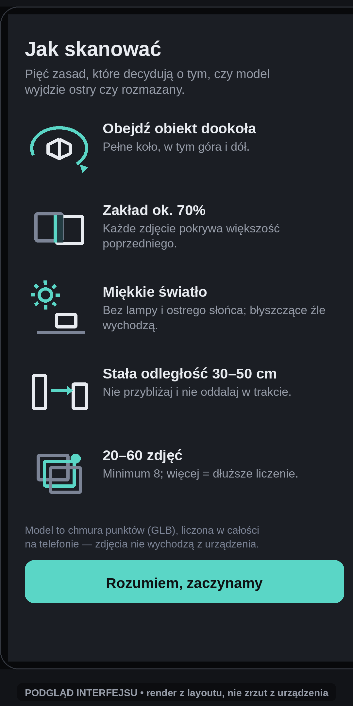
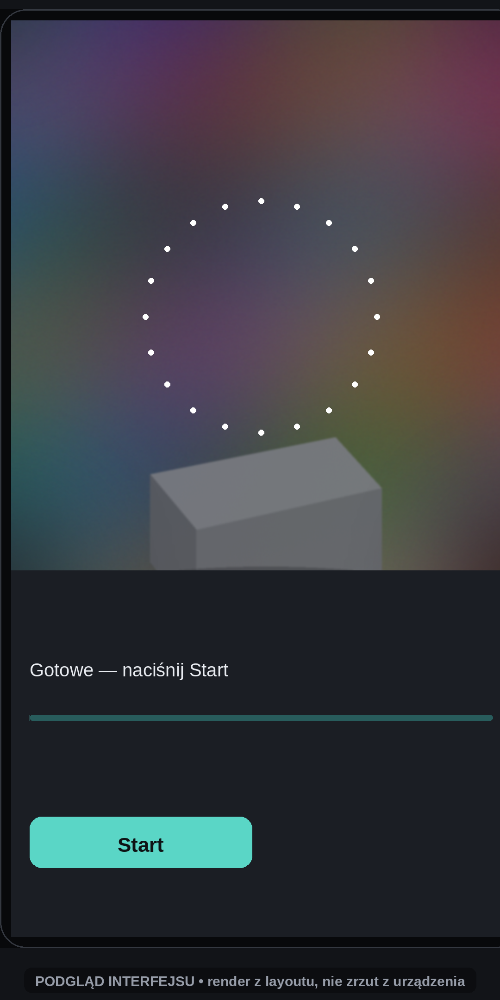
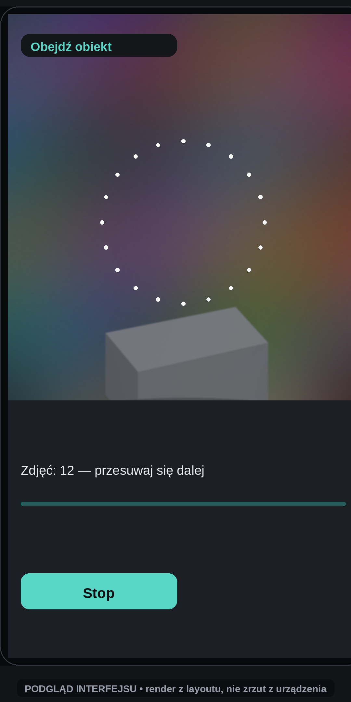
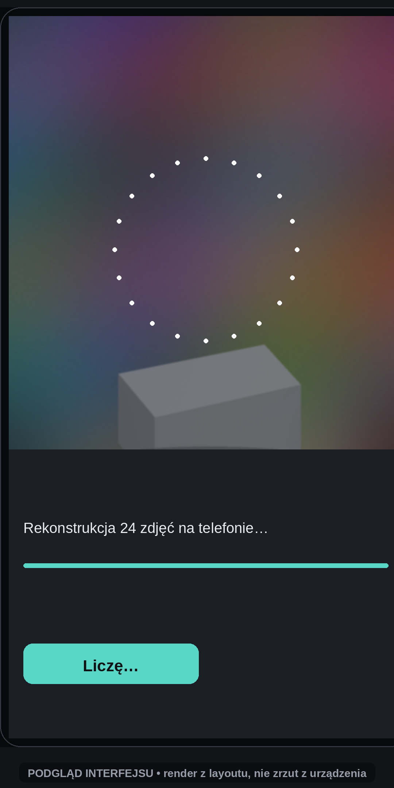
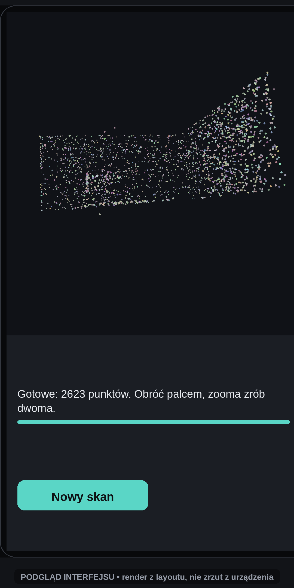

PstrykScan robi serię zdjęć obiektu (domyślnie co 0,9 s, z podpowiedzią okrążania), a następnie liczy model 3D **na telefonie** — bez serwera, bez chmury i bez konta. Po zakończeniu model otwiera się w zabudowanym podglądzie: obrót jednym palcem, zoom dwoma.
Rdzeń rekonstrukcji to własny kod w C++ (bez COLMAP-a i bez zależności zewnętrznych): detektor FAST z opisem BRIEF, dopasowanie z testem ratios, macierz zasadnicza z RANSAC, rejestracja zdjęć przez PnP (DLT + Gauss-Newton) oraz bundle adjustment z dopełnieniem Schura. Wynik zapisywany jest jako chmura punktów w formacie GLB.
Ograniczenia, o których trzeba wiedzieć: to wersja 0.2.0 i wynik jest chmurą punktów, nie siatką trójkątów; modelowanie wypukłych, matowych obiektów wychodzi najlepiej. Na syntetycznym teście 24 zdjęć rdzeń rejestruje 17 kamer z medianą błędu 0,40 px — na trudniejszych tematach będzie gorzej. Skan liczy się kilkanaście sekund do minuty zależnie od liczby zdjęć i telefonu. Aplikacja nie wysyła niczego na zewnątrz.PstrykScan takes a burst of photos of an object (0.9 s apart by default, with a hint to walk around it) and then reconstructs the 3D model **on the phone** — no server, no cloud, no account. When it finishes, the model opens in a built-in viewer: drag to orbit, pinch to zoom.
The reconstruction core is our own C++ (no COLMAP, no external dependencies): FAST detector with BRIEF descriptors, ratio-tested matching, essential matrix with RANSAC, PnP registration (DLT + Gauss-Newton) and bundle adjustment with the Schur complement. The result is saved as a point cloud in GLB.
Known limits: this is 0.2.0 and the output is a point cloud, not a triangle mesh; matte, convex objects reconstruct best. On a synthetic 24-photo test the core registers 17 cameras at a 0.40 px median error — harder subjects will do worse. Reconstruction takes from seconds to about a minute depending on photo count and the phone. Nothing leaves the device.
Instalacja: pobierz plik i otwórz go na telefonie; Android zapyta o zgodę na instalację spoza sklepu. Starsze wersje i changelog: wydanie na GitHubie.Install: download the file and open it on the phone; Android will ask to allow installs from outside the store. Older versions and changelog: release on GitHub.
Zrzuty ekranuScreenshots

Podgląd interfejsu: ekran „Jak skanować” z piktogramamiInterface preview: the "How to scan" screen with pictograms

Podgląd interfejsu: ekran kamery (render z layoutu)Interface preview: camera screen (rendered from the layout)

Podgląd interfejsu: zbieranie zdjęć z podpowiedzią okrążaniaInterface preview: capturing with the orbit hint

Podgląd interfejsu: rekonstrukcja na telefonieInterface preview: on-device reconstruction

Podgląd interfejsu: model w podglądzie 3D (prawdziwa chmura z rdzenia)Interface preview: the model in the 3D viewer (real cloud from the core)
Historia wersjiVersion history
0.3.1
Skuteczniejsza rekonstrukcja: wieloskalowy detektor cech, PROSAC-owe próbkowanie w RANSAC (dopasowania sortowane po jakości) i 2000 iteracji zamiast 400. Na prawdziwym datasecie obiektu (20 zdjęć, 900 px) liczba zarejestrowanych kamer wzrosła z 3/20 do 6/20, a punktów z 198 do 631 przy medianie błędu 1,00 px.
Better reconstruction: multi-scale feature detection, PROSAC sampling in RANSAC (matches sorted by quality) and 2000 iterations instead of 400. On a real object dataset (20 photos, 900 px) registered cameras went from 3/20 to 6/20 and points from 198 to 631 at a 1.00 px median error.
0.3.0
Kontrola tekstury przed rekonstrukcją: aplikacja liczy cechy w każdym zdjęciu i przy gładkich tematach (biały kubek, ceramika, szkło) mówi wprost, że nie ma czego dopasować — zamiast po minucie kończyć się ogólnym „nie udało się”. Do tego uczciwsze komunikaty o liczbie zdjęć i błędach aparatu.
Texture check before reconstruction: the app counts keypoints in every photo and, for smooth subjects (a white mug, ceramics, glass), says plainly that there is nothing to match instead of failing with a generic message after a minute. Also clearer messages about shot count and camera errors.
0.2.5
Zdjęcia robione są teraz jedno po drugim (poprzedni timer startował kolejne, zanim poprzednie się zapisało, i CameraX odrzucał większość), auto-stop po 40 zdjęciach, a po rekonstrukcji widać prawdziwe statystyki rdzenia: ile kamer zarejestrowano, ile punktów i jaki błąd — albo konkretny powód porażki zamiast ogólnego komunikatu.
Photos are now taken strictly one after another (the old timer started the next capture before the previous one was saved, so CameraX rejected most of them), auto-stop after 40 photos, and the result screen shows real core statistics: registered cameras, point count and error — or the concrete failure reason instead of a generic message.
0.2.4
Ikona aplikacji: launcher w każdej gęstości ekranu (mipmapy) oraz nowa ikona w sklepie o wyższym kontraście — poprzednia była ciemnogranatowa i ginęła na ciemnym tle kafelka.
App icon: launcher icons for every screen density (mipmaps) plus a higher-contrast shop icon — the previous one was dark navy and vanished on the dark card background.
0.2.3
Geometria liczona z prawdziwą ogniskową: aplikacja czyta rozmiar fizyczny sensora z Camera2 i ogniskową z EXIF (z fallbackiem na odpowiednik 35 mm), a nie zakłada 0,85 x szerokości. Na teście syntetycznym błędna ogniskowa podnosiła błąd reprojekcji z 0,40 px do 1,11 px, więc na telefonach różnica będzie odczuwalna.
Geometry now uses the real focal length: the app reads the sensor's physical size from Camera2 and the focal length from EXIF (falling back to the 35 mm equivalent) instead of assuming 0.85 x width. On the synthetic test a wrong focal raised the reprojection error from 0.40 px to 1.11 px, so phones should see a real difference.
0.2.2
Ekran instruktażowy z piktogramami: obchód dookoła, zakład 70%, miękkie światło, stała odległość 30-50 cm i 20-60 zdjęć. Pokazuje się przy pierwszym uruchomieniu i jest dostępny pod przyciskiem „?”.
Instruction screen with pictograms: walk around the object, 70% overlap, soft light, a steady 30-50 cm distance and 20-60 photos. It appears on first launch and stays available behind the "?" button.
0.2.1
Poprawka startu: widok modelu 3D ma teraz konstruktor wymagany przez układ XML, więc aplikacja nie zamyka się przy uruchomieniu. Dodatkowo rdzeń natywny jest ładowany defensywnie (komunikat zamiast crasha) i każdy nieoczekiwany błąd zapisuje się do crash.txt w katalogu aplikacji, żeby dało się go przesłać do diagnozy.
Startup fix: the 3D viewer now provides the constructor the XML layout requires, so the app no longer closes on launch. The native core is loaded defensively (a message instead of a crash) and unexpected errors are written to crash.txt in the app directory so they can be sent back for diagnosis.
0.2.0
Wersja offline: rekonstrukcja liczy się w całości na telefonie, bez serwera i bez wpisywania adresu. Natywny rdzeń SfM w C++ (FAST/BRIEF, RANSAC macierzy zasadniczej, PnP, bundle adjustment), podgląd 3D z obrotem i zoomem, eksport chmury punktów do GLB.
Offline release: reconstruction runs entirely on the phone, no server and no address field. Native C++ SfM core (FAST/BRIEF, essential-matrix RANSAC, PnP, bundle adjustment), a 3D viewer with orbit and zoom, and GLB point-cloud export.
0.1.0
Pierwsze wydanie. Zbieranie serii zdjęć z nakładką pokrycia, wysyłka ZIP-em na własny serwer, postęp rekonstrukcji etap po etapie i pobranie modelu GLB. Serwer: natywny C++ z pipeline COLMAP i własnym konwerterem PLY→GLB.
First release. Burst capture with a coverage hint, ZIP upload to your own server, per-stage reconstruction progress and GLB download. Server: native C++ with a COLMAP pipeline and our own PLY→GLB converter.